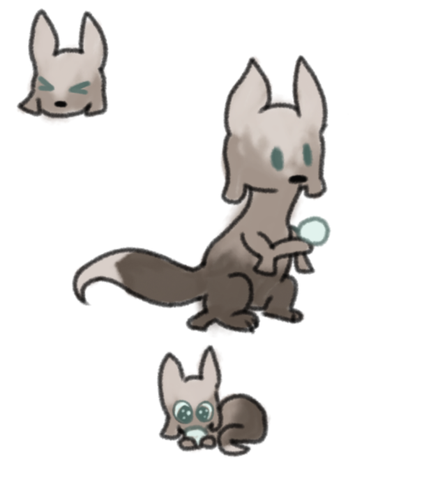

Tamer


Pronouns - he/him
Age - uhh idk specifically... just young-mid adult?
Orientation - bisexual
Positive - clever, helpful
Neutral - shy (to scugs), humble
Negative - easily shuts down, distractable
The Tamer was raised in a community dominated by scavengers. He took a liking to the creatures when he was a pup, and quickly befriended many of them. He's far more likely to be close with scavengers than other slugcats, as he worries about acting in any 'atypical ways' around the latter, leading him to rarely mention his life with the scavs. He has no great goals, but tries to live a somewhat normal life. Also, he's grown attached to a specific pearl. The scavengers he know appear to understand.
Tamer was featured in Round 3, where he was an Ambusher. He did absolutely fucking nothing.